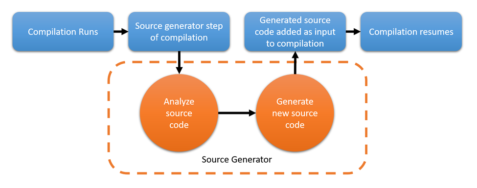

MVVM source generators
Starting with version 8.0, the MVVM Toolkit includes brand new Roslyn source generators that will help greatly reduce boilerplate when writing code using the MVVM architecture. They can simplify scenarios where you need to setup observable properties, commands and more. If you're not familiar with source generators, you can read more about them here. This is a simplified view of how they work:

This means that as you're writing code, the MVVM Toolkit generator will now take care of generating additional code for you behind the scenes, so you don't have to worry about it. This code will then be compiled and included in your application, so the end result is exactly the same as if you had written all that extra code manually, but without having to do all of that extra work! 🎉
For instance, wouldn't it be great if instead of having to setup an observable property normally:
private string? name;
public string? Name
{
get => name;
set => SetProperty(ref name, value);
}
You could just have a simple annotated field to express the same?
[ObservableProperty]
private string? name;
What about creating a command:
private void SayHello()
{
Console.WriteLine("Hello");
}
private ICommand? sayHelloCommand;
public ICommand SayHelloCommand => sayHelloCommand ??= new RelayCommand(SayHello);
What if we could just have our method, and nothing else?
[RelayCommand]
private void SayHello()
{
Console.WriteLine("Hello");
}
With the new MVVM source generators, all of this is possible, and much more! 🙌
Note
Source generators can be used independently from other existing features in the MVVM Toolkit, and you're free to mix and match using source generators with previous APIs as needed. That is, you're free to just gradually start using source generators in new files and eventually migrating older files to use them to reduce verbosity, but there is no obligation to always use either approach in a whole project or application.
These docs will go over exactly what features are included with the MVVM generators and how to use them:
- CommunityToolkit.Mvvm.ComponentModel
- CommunityToolkit.Mvvm.Input
Examples
- Check out the sample app (for multiple UI frameworks) to see the MVVM Toolkit in action.
- You can also find more examples in the unit tests.